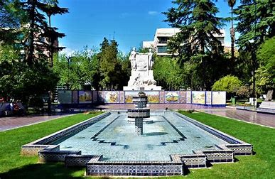

Hoy vamos a ver las los mejores lugares para vacaciones este verano en Mendoza, la tierra del
sol y del buen vino.
¡Espero que lo disfrutes!
La plaza España de la ciudad de Mendoza, provincia de Mendoza, Argentina, es un espacio y monumento inaugurados en 1949, tras el terremoto de 1861 que devastó la ciudad. Actualmente, forma parte del espacio verde que conforma la plaza Independencia y es considera la plaza más bonita de la ciudad.
Una obra de catorce toneladas de bronce que rinde homenaje al Ejército de los Andes por su exitosa campaña libertadora. Un monumento que no hay que dejar de visitar.

El Parque General San Martín es más que un simple espacio verde en Mendoza; es un compendio de historia, cultura, y naturaleza que se extiende a lo largo de 400 hectáreas.